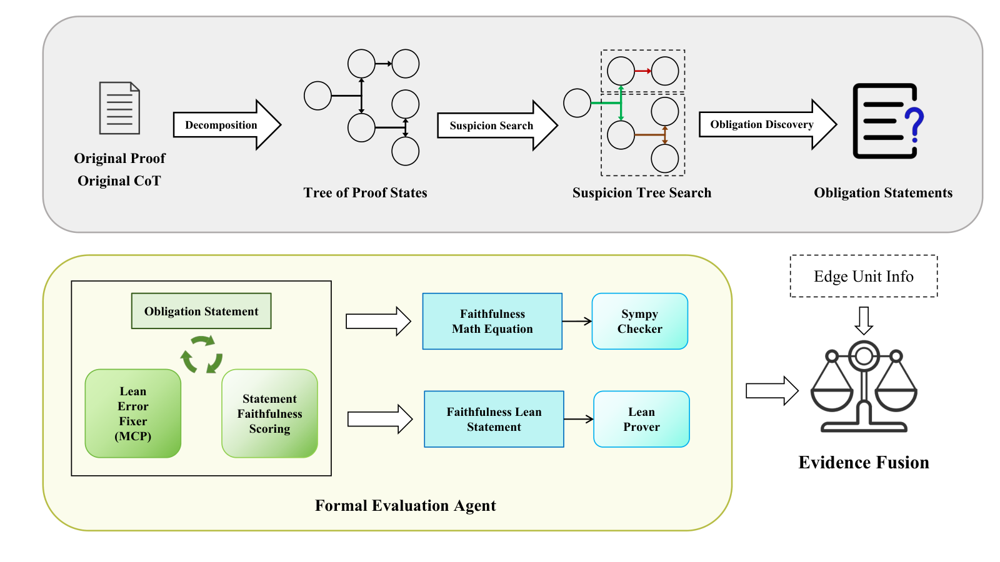

Uses Lean to verify typed proof obligations extracted from natural-language math proofs, gating formal evidence by semantic faithfulness for first-error localization.
Abstract
Large language models can now generate complex, multi-step mathematical proofs, but reliably determining their correctness and localizing early logical errors remains a critical challenge. Existing evaluation approaches largely depend on model-based natural-language judgments, which often overlook local reasoning gaps. While formal theorem provers like Lean offer a path to rigorous verification, using them to evaluate informal text requires solving locality and semantic mismatches: a prover might bypass a local flaw by proving an overly broad target, or validate an auto-formalized statement that drifts from the original mathematical intent. To address this, we introduce FaithSieve, a Lean-assisted framework for fine-grained evaluation of natural-language mathematical proofs. FaithSieve decomposes coarse proof steps into local reasoning units, extracts typed proof obligations, and verifies them through a formal evaluation agent. Formal validation is gated by semantic alignment scoring, so Lean evidence is incorporated only when the formal statement faithfully preserves the context, objects, and logical form of the original claim. We construct two expert-verified datasets, ProofLoc-Olympiad and ProofLoc-University, to benchmark first-error localization. On the 350-problem Olympiad dataset, FaithSieve using a GPT-5.4 backbone achieves 81.43% exact first-error accuracy, outperforming the direct-judging baseline of 72.29%. Furthermore, on the 200-problem ProofLoc-University benchmark spanning six advanced domains, FaithSieve reaches 84.5% exact accuracy, compared to 75.0% for the direct judge. Our work demonstrates that decomposing proofs into fine-grained units and grounding them with faithful formal evidence significantly improves reliable evaluation of natural-language reasoning.
Problem
LLMs generate multi-step mathematical proofs, but reliably judging their correctness and locating the first logical error is difficult. Natural-language judges miss local reasoning gaps, while directly using Lean risks locality and semantic mismatches where a provable formal statement drifts from the original claim.
Approach
FaithSieve decomposes coarse proof steps into fine-grained local reasoning units (EdgeUnits) and extracts typed proof obligations from suspicious transitions. Selected obligations are auto-formalized and verified via a Lean-assisted formal evaluation agent. A statement faithfulness score combining premise, conclusion, and holistic semantic checks gates whether Lean evidence is admitted, and evidence is fused into a benchmark-aligned first-error prediction.

Figure 1: Overview of the FaithSieve workflow for Lean-assisted first-error localization.
Results
On the 350-problem ProofLoc-Olympiad, FaithSieve with a GPT-5.4 backbone reaches 81.43% exact first-error accuracy versus 72.29% for direct judging. On the 200-problem ProofLoc-University, it reaches 84.5% versus 75.0% for the direct judge.
Domain
N
FaithSieve Exact (%)
Direct Exact (%)
Overall
200
84.50
75.00
Topology
20
80.00
65.00
Linear algebra
40
100.00
87.50
Real analysis
50
80.00
68.00
Convex analysis
30
60.00
50.00
ProofLoc-University domain results (FaithSieve vs GPT-5.4 direct)